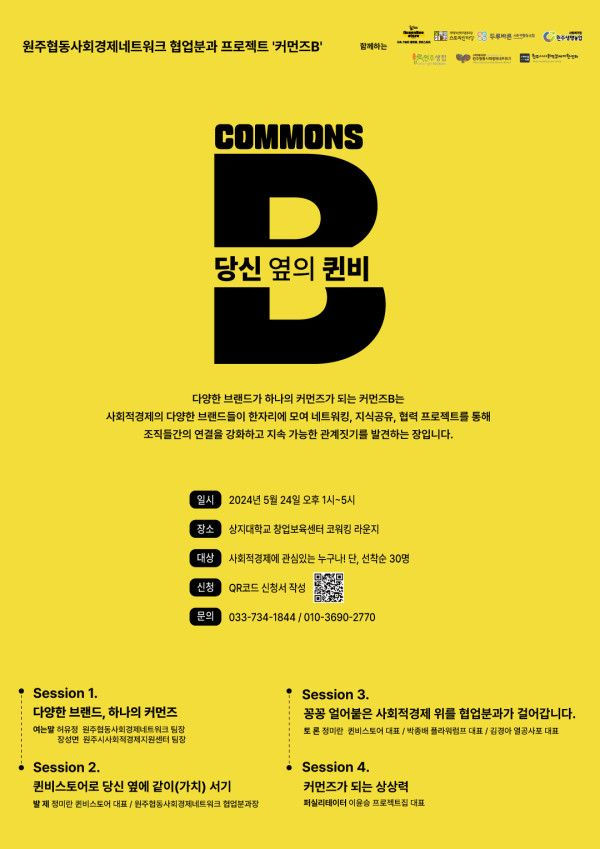

원주협동사회경제네트워크 협업분과 프로젝트 '커먼즈B'
일시 : 24년 5월 24일(금) 오후1시 ~ 5시
장소 : 상지대학교 창업보육센터 코워킹라운지(상지대길 83)
신청 : 포스터 하단 QR코드를 통한 신청서 작성
문의 : 원주협동사회경제네트워크 033-734-1844 / 주식회사 퀸비스토어 [연락처 생략]
다양한 브랜드가 하나의 커먼즈가 되는 커먼즈B는
사회적경제의 여러 브랜드들이 한자리에 모여 네트워킹, 지식공유, 협력 프로젝트를 통해
조직들간의 연결을 강화하고 지속 가능한 관계짓기를 발견하는 장입니다.
5월의 브랜드, 퀸비스토어에서 준비하는 <당신 옆의 퀸비>에서는
세션1에서 다양한 브랜드, 하나의 커먼즈라는 키워드로 커먼즈B 행사를 소개하고 상호부조에 대해 이야기합니다.
세션 2에서는 퀸비스토어로 당신 옆에 같이 서기.
행사의 주인공인 퀸비스토어를 정미란 대표님이 소개합니다.
세션 3에서는 '꽁꽁 얼어붙은 사회적경제 위를 협업분과가 걸어갑니다'
퀸비스토어 정미란 대표님, 플라워럼프 박종배 대표님, 열공사포 김경아 대표님과 협업 사례들을 이야기합니다.
협업 사례들과 함께 얼어붙은 사회적경제 안에서 우리가 할 수 있는 일들을 토론으로 이어갑니다.
세션 4에서는 프로젝트집 이윤승 대표님과 함께 커먼즈가 되는 상상력을 틔웁니다.
다양한 키워드와 함께 참여자들과 네트워킹하고 관계의 기반을 다집니다.
브랜드와 네트워킹, 협력에 관심있는 사회적기업, 협동조합, 사회적경제 조직의 많은 참여 부탁드립니다.
네트워크 협업분과, 원주시사회적경제지원센터가 함께하고 있는 커먼즈 B 행사는
원주 안의 사회적경제 브랜드를 소개하는 자리로 매월 넷째주 금요일에 열립니다.
.
.
5월 24일(금) 커먼즈B - 당신 옆의 퀸비(주식회사 퀸비스토어)
6월 28일(금) 커먼즈B - 암쏘데이(원주생명농업 주식회사)
.
.
커먼즈B 행사는 원주협동사회경제네트워크 협업분과 위원인
길터사회적협동조합, 두루바른사회적협동조합, 원주생명농업 주식회사, 원주소비자생활협동조합, 주식회사 퀸비스토어, 지역문화콘텐츠협동조합 스토리한마당이
함께 기획하고 준비합니다.